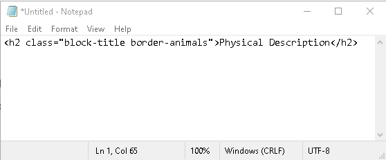

import pandas as pd
df=pd.DataFrame([data, index, columns, dtype, copy])Lesson 2. Meet the Animals
This lesson continues to explore the diverse features of BeautifulSoup, a Python library designed for parsing XML and HTML documents. We will utilize BeautifulSoup to extract information about a select group of animals showcased on the Meet the Animals webpage of Smithsonian’s National Zoo and Conservation Biology Institute. Additionally, we will explore Pandas, a powerful Python library used for structuring, analyzing, and manipulating data.
Data skills | concepts
- Search parameters
- HTML
- Web scraping
- Pandas data structures
Learning objectives
- Identify search parameters and understand how they are inserted into a url.
- Navigate document, element, attribute, and text nodes in a Document Object Model (DOM).
- Extract and store HTML elements
- Export data to .csv
This tutorial is designed to support multi-session workshops hosted by The Ohio State University Libraries Research Commons. It assumes you already have a basic understanding of Python, including how to iterate through lists and dictionaries to extract data using a for loop. To learn basic Python concepts visit the Python - Mastering the Basics tutorial.
LESSON 2
Step 1. Copyright | Terms of Use
Before starting any webscraping or API project, you must:
Review and understand the terms of use.
- Do the terms of service include any restrictions or guidelines?
- Are permissions/licenses needed to scrape data? If yes, have you obtained these permissions/licenses?
- Is the information publicly available?
- If a database, is the database protected by copyright? Or in the public domain?
Fair Use
Limited use of copyrighted materials is allowed under certain conditions for journalism, scholarship, and teaching. Use the Resources for determining fair use to verify your project is within the scope of fair use. Contact University Libraries Copyright Services if you have any questions.
Check for robots.txt directives
robots.txt directives limit web-scraping or web-crawling. Look for this file in the root directory of the website by adding /robots.txt to the end of the url. Respect these directives.
Locate and read the terms of use for the Smithsonian’s National Zoo & Conservation Biology Institute
- What are the copyright restrictions for this resource?
- What are the terms of use?
The copyright restrictions for the Smithsonian’s National Zoo & Conservation Biology Institute are listed with the Terms of Use and can be found on the center of the bottom footer of the webpage.
Step 2. Is an API available?
Technically, yes. The Smithsonian Institution provides an Open Access API that allows developers to access a wide range of data.
However, for learning purposes, we’ll focus on scraping a small sample from the Meet the Animals HTML page. This will help us practice how to:
- Navigate a webpage’s structure
- Extract specific HTML elements
- Store the data for further use
This hands-on approach is a great way to build foundational web scraping skills before working with APIs.
Step 3. Examine the URL
Go to Meet the Animals_ and choose an animal to examine from the list. Note the structure of the URL. Return to Meet the Animals and select another animal to examine. Confirm the structure of the URL.
The base URL for the Meet the Animals webpage is https://nationalzoo.si.edu/animals/list. Note the URL ends with the word list. If meerkat is chosen, the Meet the Animals URL changes to https://nationalzoo.si.edu/animals/meerkat. The URL now ends with meerkat the name of the animal.
Step 4. Inspect the elements
Both XML and HTML are structured as trees, where elements are nested within one another. When you request a URL, the server returns an HTML or XML document. Your browser then downloads and parses this document to display it visually.
In Lesson 1 we worked with well-structured XML, which made it easy to navigate:
- Each article was uniquely identified by the
<LogicalSectionID>tag. - Titles appeared in the
<LogicalSectionTitle>tag. - Category type was included in the
<LogicalSectionType>tag.
In contrast, HTML documents can be more complex and less predictable. Fortunately, Google Chrome’s Developer Tools make it easier to explore and understand the structure of a webpage.
Example:
Find the common name for meerkat.
- Open the meerkat Meet the Animals webpage in Chrome.
- Right-click on the element you want to inspect (e.g., the common name).
- Select Inspect.

This opens the Developer Tools panel, typically on the right of the screen.
The default Elements tab shows the HTML structure (DOM).
Scroll through the rendered HTML to explore more content.
 Click the inspect icon in the top-left corner of the in the Developer Tools panel.
Click the inspect icon in the top-left corner of the in the Developer Tools panel.Hover over elements on the webpage to highlight them in the HTML.
As you hover, Chrome will:
- Highlight the corresponding element on the page
- Show a tooltip with tag details (e.g., class, ID)
- Reveal the element’s location in the HTML tree

This process helps you identify the exact tags and attributes you’ll need to target when scraping data from the page.
Viewing an Element’s HTML Structure
To examine an element’s exact location within the DOM:
- In Chrome Developer Tools, right-click on the highlighted element.
- Select Copy > Copy element.
- Paste the copied HTML into Notepad or any text editor to view its full structure and attributes.
This is especially helpful for identifying tags, classes, and nesting when preparing to extract data through web scraping.


Go to Meet the Animals and choose an animal to examine from the list. Inspect the following elements, select Copy > Copy element, and then past the text to Notepad or a similar text editor.
- Common name
- Scientific name
- Taxonomic information
- Class
- Order
- Family
- Genus and species
- Physical description
- Size
- Native habitat
- Conservation status
- Fun facts
Step 5. Identify Python libraries for project
requests
The requests library retrieves HTML or XML documents from a server and processes the response.
BeautifulSoup
BeautifulSoup parses HTML and XML documents, helping you search for and extract elements from the DOM.
pandas
Pandas is a large Python library used for manipulating and analyzing tabular data. Helpful Pandas methods include:
pd.DataFrame
A Pandas DataFrame is one of the most powerful and commonly used data structures in Python for working with tabular data—data that is organized in rows and columns, similar to a spreadsheet or SQL table.
A DataFrame is a 2-dimensional labeled data structure with:
- Rows (each representing an observation or record)
- Columns (each representing a variable or feature)
Think of it like an Excel sheet or a table in a database.
🔗 See __Pandas DataFrame documentation.
pd.read_csv( )
The pd.read_csv() function is used to read data from a CSV (Comma-Separated Values) file and load it into a DataFrame.
pd.read_csv('INSERT FILEPATH HERE')Example:
import pandas as pd
df=pd.read_csv('data/meet_the_animals.csv') #df is a common abbreviation for DataFrame
df| animal | |
|---|---|
| 0 | black-throated-blue-warbler |
| 1 | elds-deer |
| 2 | false-water-cobra |
| 3 | hooded-merganswer |
| 4 | patagonian-mara |
🔗 See Pandas .read_csv( ) documentation.
.tolist( )
The method .tolist() is used in to convert a Series (a single column of data) into a Python list.
df.Series.tolist()Example:
import pandas as pd
df=pd.read_csv('data/meet_the_animals.csv')
animals=df.animal.tolist()
animals['black-throated-blue-warbler',
'elds-deer',
'false-water-cobra',
'hooded-merganswer',
'patagonian-mara']🔗 See .tolist( ) documentation.
.dropna( )
The dropna() method is used to remove missing values (NaN) from a DataFrame or Series. It’s a fast and effective way to clean your data—but it should be used with care.
DataFrame.dropna(*, axis=0, how=<no_default>, thresh=<no_default>, subset=None, inplace=False, ignore_index=False).fillna( )
The .fillna() method is used to replace NaN (missing) values with a value you specify.
df.Series.fillna(value=None, *, method=None, axis=None, inplace=False, limit=None, downcast=<no_default>)This is especially useful when you want to:
- Fill in missing data with a default value
- Use statistical values like the mean or median
- Forward-fill or backward-fill based on surrounding data
🔗 See .fillna( ) documentation.
.iterrows( )
The .iterrows() method allows you to iterate over each row in a DataFrame as a pair:
- The index of the row
- The row data as a pandas Series
df=DataFrame.iterrows()Example:
import pandas as pd
df=pd.read_csv('data/meet_the_animals.csv')
for idx, row in df.iterrows():
print(row.animal)black-throated-blue-warbler
elds-deer
false-water-cobra
hooded-merganswer
patagonian-maraThis is useful when you need to process rows one at a time, especially for tasks like conditional logic or row-wise operations.
Caution!
.iterrows() is not the most efficient method for large datasets. For better performance, consider using vectorized operations or .itertuples().
🔗 See .iterrows( ) documentation.
.iloc
The .iloc property is used to select rows (and columns) by their integer position (i.e., by index number, not label).
DataFrame.iloc[start:end]Example:
import pandas as pd
df=pd.read_csv('data/meet_the_animals.csv')
for idx, row in df.iloc[0:1].iterrows():
print(row.animal)black-throated-blue-warbler.iloc[row_index]accesses a specific row.iloc[row_index, column_index]accesses a specific cell- You can also use slicing to select multiple rows or columns
Use .iloc when:
- You want to access data by position, not by label
- You’re working with numeric row/column indices
- You’re iterating or slicing through rows or columns
🔗 See .iloc documentation.
.concat( )
The pandas.concat function is used to join two or more DataFrames along a specific axis:
- axis=0 → stacks DataFrames vertically (adds rows)
- axis=1 → stacks DataFrames horizontally (adds columns)
pandas.concat(objs, *, axis=0, join='outer', ignore_index=False, keys=None, levels=None, names=None, verify_integrity=False, sort=False, copy=None)Example:
import pandas as pd
results=pd.DataFrame(columns=['common_name','size'])
df=pd.read_csv('data/meet_the_animals.csv')
for idx, row in df.iterrows():
common_name=row.animal
size=10
data_row={
'common_name':common_name,
'size':size
}
data=pd.DataFrame(data_row, index=[0])
results=pd.concat([data, results], axis=0, ignore_index=True)
results| common_name | size | |
|---|---|---|
| 0 | patagonian-mara | 10 |
| 1 | hooded-merganswer | 10 |
| 2 | false-water-cobra | 10 |
| 3 | elds-deer | 10 |
| 4 | black-throated-blue-warbler | 10 |
🔗 See .concat documentation.
BONUS: try/except
Even with well-written code, things can go wrong—like missing HTML tags on a webpage or inconsistent data formats. That’s where Python’s try / except blocks come in.
They allow your program to handle errors gracefully instead of crashing.
🧪 How It Works
- The code inside the try block is executed first.
- If an error occurs, Python jumps to the except block.
- Your program continues running without stopping unexpectedly.
Example:
import pandas as pd
results=pd.DataFrame(columns=['common_name','size'])
for idx, row in df.iterrows():
try:
common_name=row.animal
size=10
data_row={
'common_name':common_name,
'size':size
}
data=pd.DataFrame(data_row, index=[0])
results=pd.concat([data, results], axis=0, ignore_index=True)
except:
common_name='no name found'
size=0
data_row={
'common_name':common_name,
'size':size
}
data=pd.DataFrame(data_row, index=[0])
results=pd.concat([data, results], axis=0, ignore_index=True)
results| common_name | size | |
|---|---|---|
| 0 | patagonian-mara | 10 |
| 1 | hooded-merganswer | 10 |
| 2 | false-water-cobra | 10 |
| 3 | elds-deer | 10 |
| 4 | black-throated-blue-warbler | 10 |
Tip:
For a more detailed explanation with examples, ask Copilot to explain try except python.
Step 6. Write and test code
Use pandas to read the meet_the_animals.csv file into a DataFrame and create a list of animal common_names. Then iterate through the list of common_names to gather the following elements from the webpages for each animal. Store the values for each variable in a Pandas DataFrame. Export DataFrame to .csv.
- Common name
- Scientific name
- Taxonomic information
- Class
- Order
- Family
- Genus and species
- Physical description
- Size
- Native habitat
- Conservation status
- Fun facts
import requests
from bs4 import BeautifulSoup
import pandas as pd
#1. Read in data/meet_the_animals.csv and create a list of animals to search
df = pd.read_csv('data/meet_the_animals.csv')
animals = df.animal.tolist()
# 2. Create a DataFrame for the search results
results = pd.DataFrame(columns=['common_name', 'scientific_name', 'class',
'order', 'family', 'genus_species', 'physical_description',
'size', 'native_habitat', 'status', 'fun_facts'])
# 3. Identify the base url
base_url = 'https://nationalzoo.si.edu/animals/'
# 4. Iterate through the list of animals. Construct a url for each animal's
# website. Create a dictionary to store variables for each animal
# Then request and parse the HTML for each website, extract the variables and
# store variables in dictionary.
count = 1
for animal in animals:
print(f"Starting #{count} {animal}")
count += 1
row={} #dictionary to store variables for each animal
url=base_url+animal
response=requests.get(url).text
soup=BeautifulSoup(response, 'html.parser')
common_name=animal
scientific_name = soup.h3.text
row['common_name']=common_name
row['scientific_name']=scientific_name
block_titles=soup.find_all('h2',{'class':'block-title'})
# # find_taxonomic_information=soup.find_all('div',{'class':'views-element-container'})
for each_tag in block_titles:
# print(each_tag.text)
if each_tag.text == 'Taxonomic Information':
# print(each_tag.text)
biological_classifications=each_tag.find_all_next('span',{'class':'italic'})
biological_class=biological_classifications[0].text #named this biological_class because class alone is reserved word in Python
biological_order=biological_classifications[1].text
biological_family=biological_classifications[2].text
biological_genus=biological_classifications[3].text
row['class']=biological_class
row['order']=biological_order
row['family']=biological_family
row['genus_species']=biological_genus
elif each_tag.text == 'Physical Description':
physical_description=each_tag.find_next('div',{'class':'body'}).text.strip()
row['physical_description']=physical_description
elif each_tag.text == 'Size':
size=each_tag.find_next('div',{'class':'body'}).text.strip()
row['size']=size
elif each_tag.text == 'Native Habitat':
habitat=each_tag.find_next('div',{'class':'body'}).text.strip()
row['native_habitat']=habitat
elif each_tag.text == 'Conservation Status':
status=each_tag.find_next('ul')['data-designation']
row['stats']=status
elif each_tag.text == 'Fun Facts':
facts=[]
facts_list=each_tag.find_next('ol').find_all('li')
for each_fact in facts_list:
facts.append(each_fact.text)
facts=(' ').join(facts)
row['fun_facts']=facts
each_row=pd.DataFrame(row, index=[0])
#5. Concatenate each row to results.
results=pd.concat([each_row, results], axis=0, ignore_index=True)
#6. Write results to csv
results.to_csv('data/animals.csv')